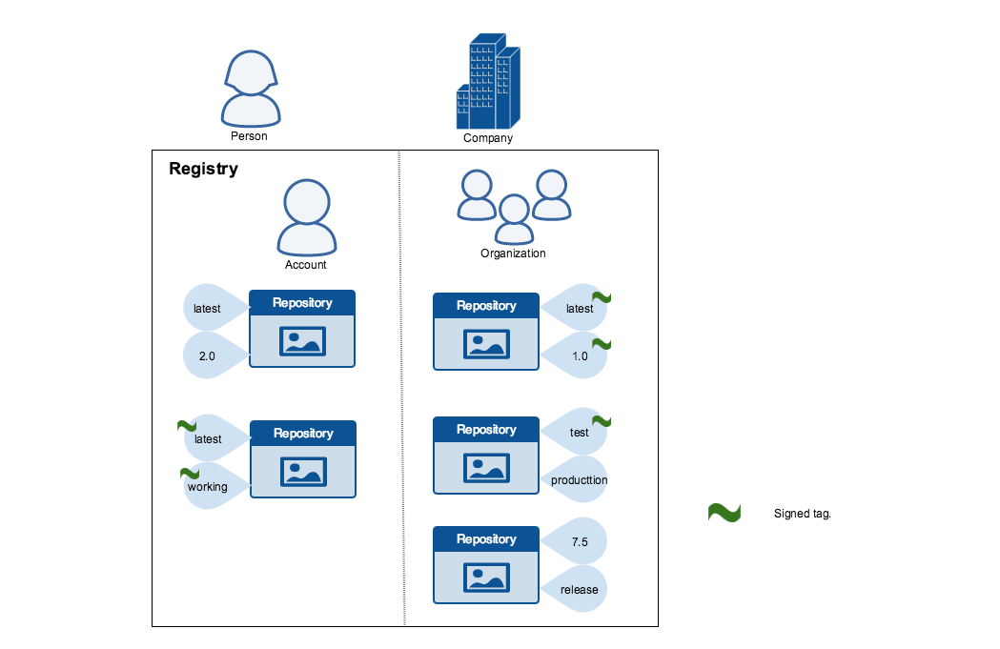
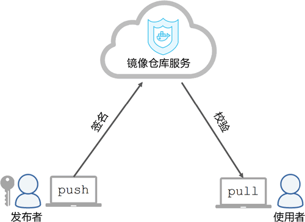
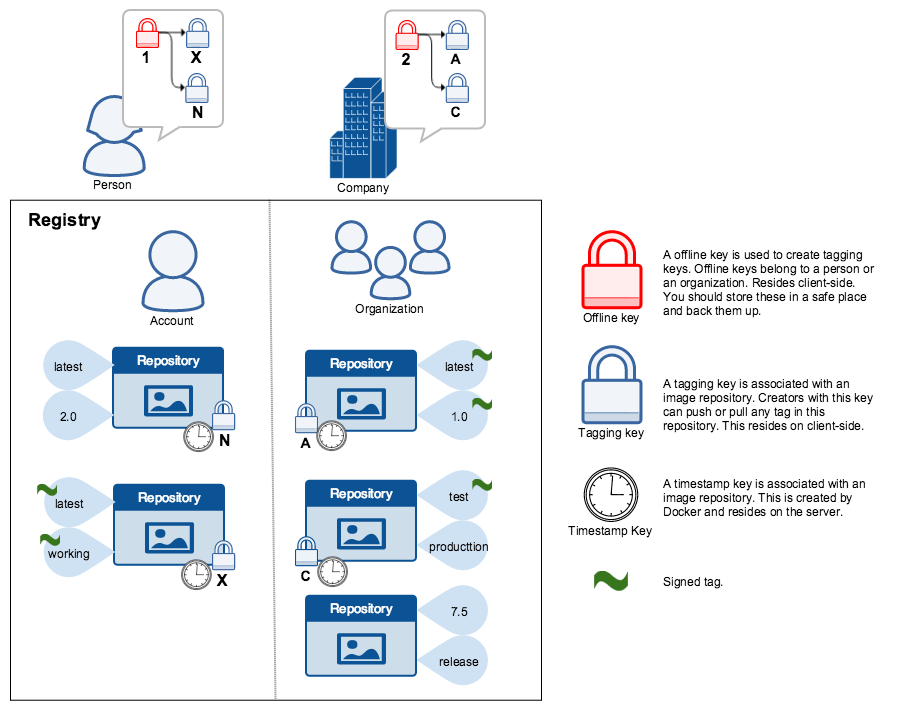
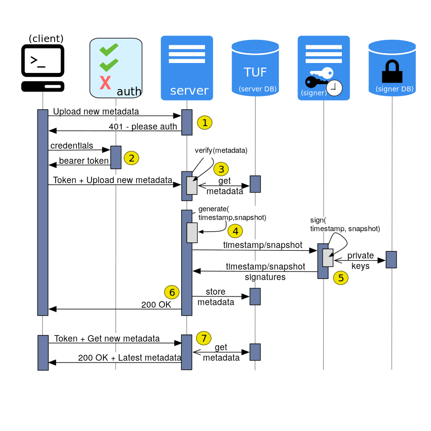

幸运的是，Docker 通过一种称为 Docker 内容信任的功能来实现信任机制。
在网络系统之间传输数据时，信任是一个核心问题。特别是，当通过不受信任的互联网网络进行通信时，确保系统操作的所有数据的完整性和可信任的发布者，是至关重要的。使用 Docker Engine 将镜像推、拉到公共或私有仓库中，镜像签名能够保证，通过任何渠道从仓库获取到的镜像是完整的和可信任的。
1. 信任机制
介绍 DCT 到底是什么，其作用是为了干什么！
Docker Content Trust(DCT)提供了对从远程 Docker 仓库上传和下载的镜像文件，使用数字签名的能力，其能够保证镜像文件的完整性和发布者的可信性。DCT 通过 Docker 标签对镜像文件是否进行签名进行区分，镜像发布者可以自行决定在哪些标签上进行签名。
DCT 实现的是客户端的签名和验证，意味着由 Docker 客户端执行它们。显然，类似这样的密码机制，对于确保在互联网上拉取和推送的软件的可信性是非常重要的，其在整个技术栈的各个层次，以及软件交付流水线的各个环节都在发挥越来越重要的作用。

2. 镜像签名
介绍对镜像文件进行签名，秘钥使用流程和关系！
镜像标签的信任是，通过使用签名密钥来管理的。第一次使用 DCT 来操作时，将创建密钥集，由以下类密钥组成：
- 根密钥 -
root key- 它用于创建和签名新的库密钥，因此应该被妥善保管
- an offline key that is the root of DCT for an image tag
- 库密钥 - 标签密钥 -
repository key- 用于对需要推送到指定镜像库的打标签的镜像进行签名
- repository or tagging keys that sign tags
- 时间戳密钥 -
timeStamp key- 它被保存在远程镜像库中，用于一些更加高级的使用场景以确保时效性
- server-managed keys such as the timestamp key, which provides freshness security guarantees for your repository

下图描述了各种签名密钥及其关系，但需要注意的是根密钥的丢失是很难恢复的，所以应该将根密钥备份到一个安全的地方。

3. 初次使用
使用我们自建的 notary(一个用于建立内容之间信任的平台)服务进行容器签名
在 Docker CLI 中，我们可以使用 docker trust 命令对容器文件进行签名和推送。但是需要注意的是，必须要部署一个公证服务器(notary)才可以对容器镜像进行签名。
# Notary Server
$ git clone https://github.com/theupdateframework/notary.git
$ docker-compose up -d

要签名一个 Docker 镜像，需要一个密钥对，其可以使用命令在本地生成(默认情况下存储在 ~/.docker/trust/ 中)，也可以由来自证书机构。
# 本地生成
$ docker trust key generate point_me
Generating key for point_me...
Enter passphrase for new point_me key with ID 9deed25:
Repeat passphrase for new point_me key with ID 9deed25:
Successfully generated and loaded private key.
# 使用已有
$ docker trust key load key.pem --name point_me
Loading key from "key.pem"...
Enter passphrase for new point_me key with ID 8ae710e:
Repeat passphrase for new point_me key with ID 8ae710e:
Successfully imported key from key.pem
接下来，我们将公钥添加到公证服务器上。如果是第一次执行的话，需要输入一些相关信息，才可以使用。
$ docker trust signer add --key cert.pem point_me registry.example.com/admin/demo
Adding signer "point_me" to registry.example.com/admin/demo...
Enter passphrase for new repository key with ID 10b5e94:
最后，我们将使用私钥对特定镜像文件的标签进行签名，并将其推到仓库中去。
# 签名
$ docker trust sign registry.example.com/admin/demo:1
Signing and pushing trust data for local image registry.example.com/admin/demo:1, may overwrite remote trust data
The push refers to repository [registry.example.com/admin/demo]
7bff100f35cb: Pushed
1: digest: sha256:3d2e482b82608d153a374df3357c0291589a61cc194ec4a9ca2381073a17f58e size: 528
Signing and pushing trust metadata
Enter passphrase for signer key with ID 8ae710e:
Successfully signed registry.example.com/admin/demo:1
# 启用
$ export DOCKER_CONTENT_TRUST=1
# 推送
$ docker push registry.example.com/admin/demo:1
The push refers to repository [registry.example.com/admin/demo:1]
7bff100f35cb: Pushed
1: digest: sha256:3d2e482b82608d153a374df3357c0291589a61cc194ec4a9ca2381073a17f58e size: 528
Signing and pushing trust metadata
Enter passphrase for signer key with ID 8ae710e:
Successfully signed registry.example.com/admin/demo:1
# 查看
$ docker trust inspect --pretty registry.example.com/admin/demo:1
# 删除远程服务器对该镜像的信任
$ docker trust revoke registry.example.com/admin/demo:1
Enter passphrase for signer key with ID 8ae710e:
Successfully deleted signature for registry.example.com/admin/demo:1
Docker 客户端默认禁用镜像签名，如果希望启用，则将 DOCKER_CONTENT_TRUST 环境变量设置为 1 即可。这将阻止用户使用带有非签名的图像文件，对应对应的客户端命令，比如 push、build、create、pull 和 run。
# 拉取失败
$ docker pull registry.example.com/user/image:1
Error: remote trust data does not exist for registry.example.com/user/image: registry.example.com does not have trust data for registry.example.com/user/image
# 拉取成功
$ docker pull registry.example.com/user/image@sha256:d149ab53f8718e987c3a3024bb8aa0e2caadf6c0328f1d9d850b2a2a67f2819a
sha256:ee7491c9c31db1ffb7673d91e9fac5d6354a89d0e97408567e09df069a1687c1: Pulling from user/image
ff3a5c916c92: Pull complete
a59a168caba3: Pull complete
Digest: sha256:ee7491c9c31db1ffb7673d91e9fac5d6354a89d0e97408567e09df069a1687c1
Status: Downloaded newer image for registry.example.com/user/image@sha256:ee7491c9c31db1ffb7673d91e9fac5d6354a89d0e97408567e09df069a1687c1
4. 使用示例
直接基于 hub.docker 仓库服务进行操作！
下面通过一个简单的配置 DCT 的实战例子予以阐述。我们需要一个 Docker 客户端和一个用来推送镜像的库，Docker Hub 上的镜像库即可。
# 启用特性
$ export DOCKER_CONTENT_TRUST
# 登录hub.docker仓库
$ docker login
# 对镜像打标签并推送到目标镜像库
$ docker image tag alpine:latest escape/dockerbook:v1
# 推送打了新标签的镜像
# 在签名时会创建两个密钥，根密钥和库密钥
$ docker image push nigelpoulton/dockerbook:v1
# 在拉取镜像时使用如下命令来覆盖DCT设置
$ docker image pull --disable-content-trust nigelpoulton/dockerbook:unsigned
# 尝试运行未签名的镜像容器
$ docker container run -d --rm nigelpoulton/dockerbook:unsigned
docker: No trust data for unsigned.
5. 参考链接
送人玫瑰，手有余香！